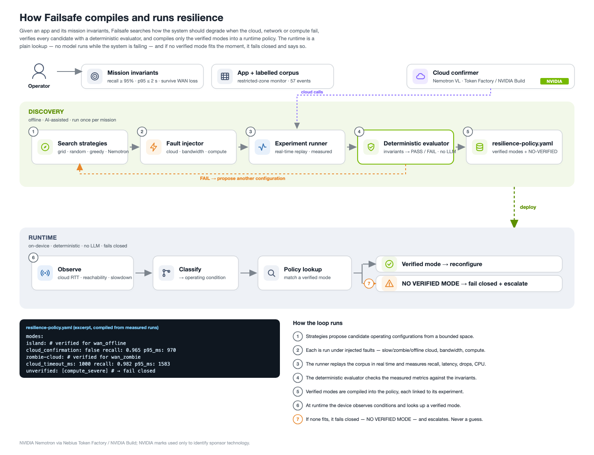
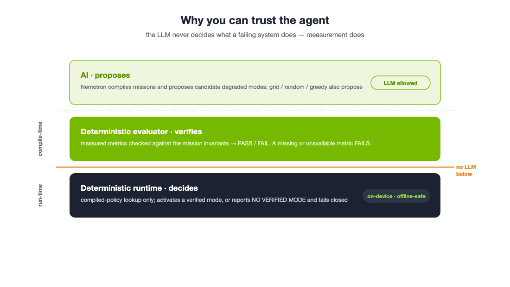
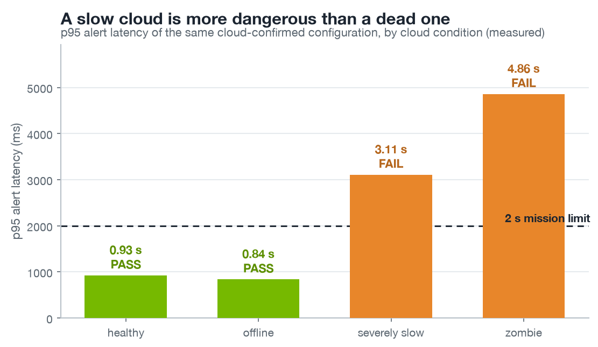
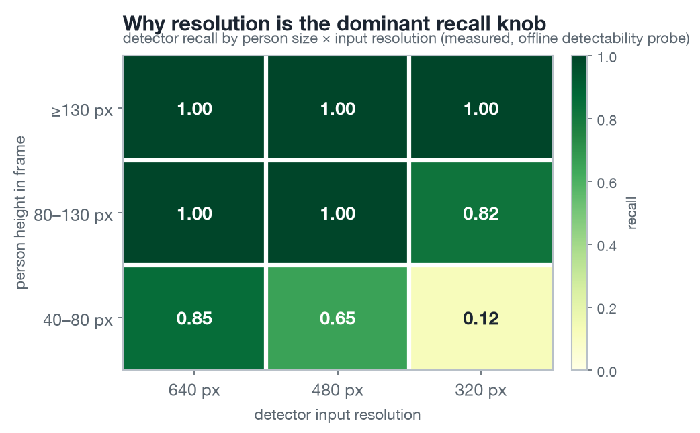
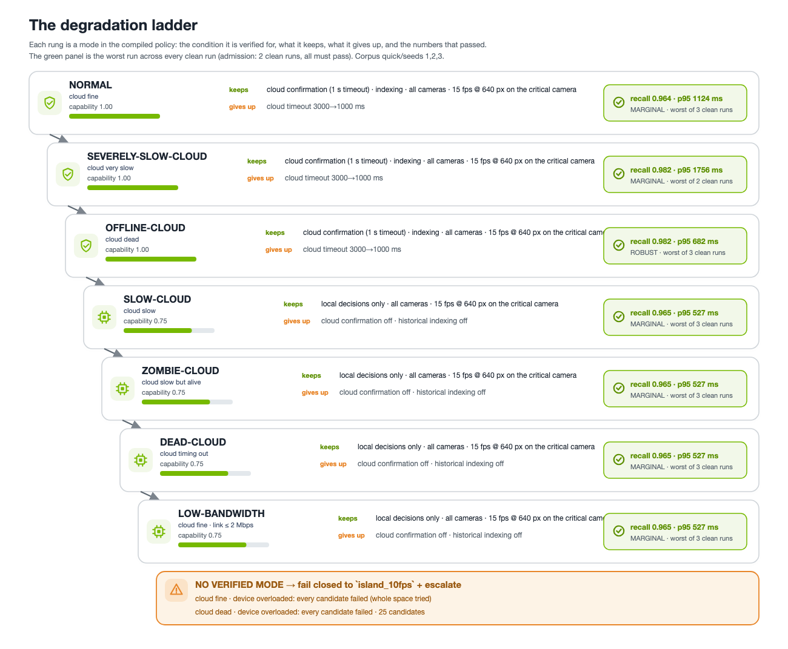
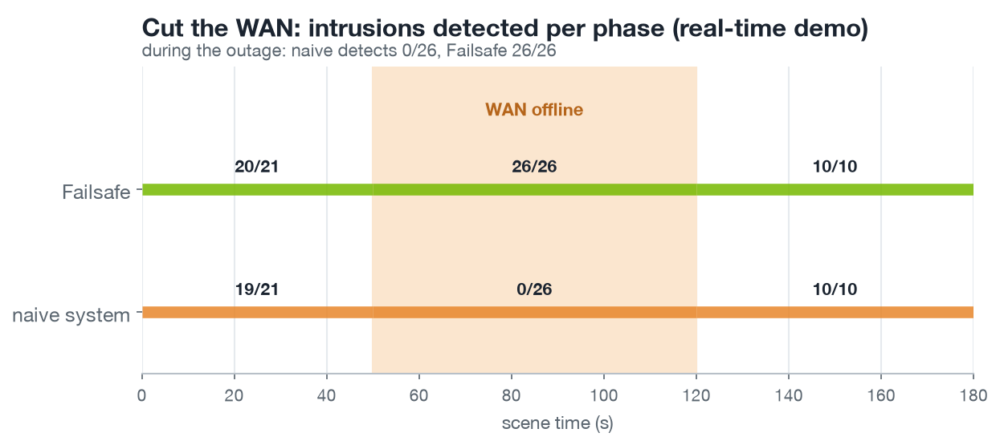
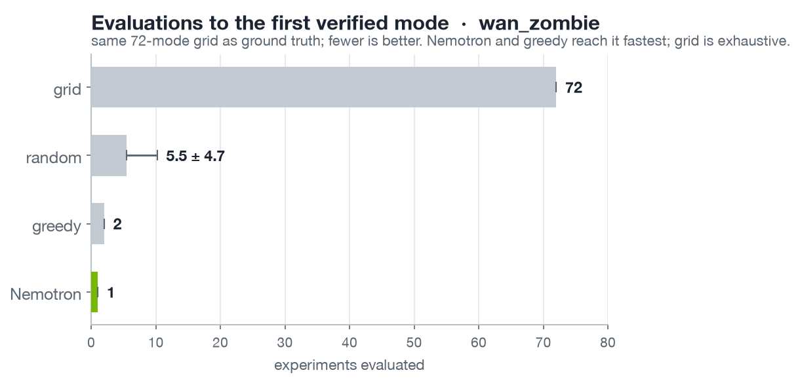
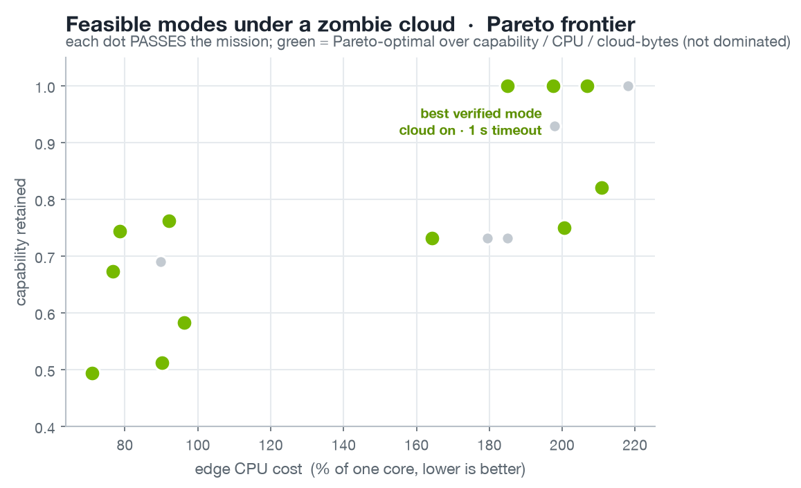
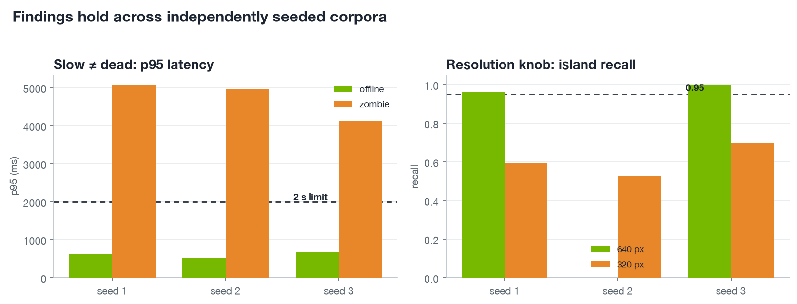
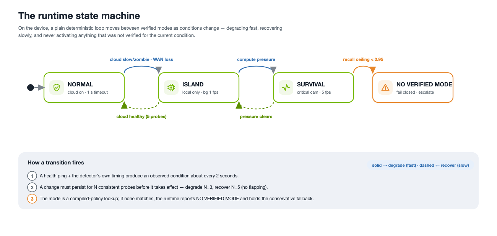

Failsafe: a resilience compiler for edge / physical-AI systems
Research report. All numbers here are MEASURED on the evaluation corpus and reproducible from artifacts/; none are illustrative. Figures are generated by docs/diagrams/ from the same result files. "Verified" throughout means passed the deterministic evaluator on the stated corpus, not a claim of universal or certified safety.
Abstract
Edge and physical-AI systems increasingly pair a small on-device model with cloud reasoning, and they work well until the real world stops behaving like a data center: the WAN drops, the cloud turns slow, bandwidth collapses, or the accelerator saturates. Today engineers hand-write fallback logic for these cases and hope it still meets the requirement. Failsafe instead experimentally discovers the cheapest capability degradation that preserves a stated mission under injected failures, verifies each candidate with a deterministic evaluator, and compiles only the verified modes into a runtime policy that is looked up deterministically, no model runs while the system is failing. On a restricted-zone monitoring workload we measured 200+ real-time experiments across two 72-configuration grids and found, among other results, that a reachable-but-slow cloud is more dangerous than an offline one (p95 alert latency 5.05 s vs 0.84 s for the same configuration), that the fix is a discoverable threshold (a 1 s cloud timeout brings it to 1.77 ± 0.19 s; two of three runs pass, so the verified zombie mode is the cloud-off island configuration, §3.2), and that under severe compute pressure no configuration in the space passes, which Failsafe reports as NO VERIFIED MODE rather than shipping a guess. An LLM (NVIDIA Nemotron) proposes candidates and, in the one live search that completed, reached the best verified mode in fewer evaluations than uninformed search; it is scored against the same measured grid and cannot make a failing configuration pass.

1. Problem
A physical-AI application, cameras watching a hazardous zone, a robot, a drone, typically depends on a stack of resources: a local detector, cloud confirmation/reasoning, a network link, a compute budget, sensors. Each of these degrades independently in deployment. The failure that matters is not "the model is slightly less accurate" but "the system silently stopped doing the one thing it promised", e.g. missing a person entering a dangerous area because every alert was waiting on a cloud that had gone slow.
The state of practice is hand-written graceful degradation ("if the cloud times out, use the local model"). Two problems: (1) it is unverified, nobody measured whether the fallback still meets the requirement under that failure; (2) it handles the cases an engineer imagined, not the ones that occur. Recent industry guidance (Google's 2026 agentic-edge note; AWS offline-first edge guidance) argues systems should degrade gracefully, but leaves the engineering to the developer.
Failsafe's thesis: turn hand-guessed fallbacks into measured, verified, automatically compiled degradation. Discover what works before deployment; deploy only what was proven; fail closed when nothing fits.
2. Approach
The loop is: mission + application → propose degraded configurations → inject failures → measure → verify against invariants → compile verified modes → deterministic runtime.
Two separations define the design and are the reason the system is trustworthy:
- Discovery (offline, AI-assisted) vs. runtime (online, deterministic). An LLM reasons about candidates before deployment; at runtime a compiled policy is a table lookup. No LLM is on the path that decides what a failing system does.
- Proposal vs. verification. Anything, grid search, a greedy heuristic, Nemotron, may propose a configuration. Only the deterministic evaluator, checking measured metrics against the
MissionSpec, may accept one.

2.1 Mission specification
A mission states invariants (hard: critical_event_recall ≥ 0.95, alert_latency_p95_ms ≤ 2000, survive WAN loss), objectives (soft, for ranking passing configs: maximise precision, minimise cloud bytes and CPU), and degradable capabilities. Candidates are ordered lexicographically, feasible → capability retained → quality → cost, never by a scalar weighted score, so "graceful degradation" means literally "sacrifice as little as possible while staying feasible."
2.2 Workload, corpus, and metrics
The evaluation workload is a restricted-zone monitor: four cameras, a real YOLOv8n person detector at a configurable input resolution, foot-point-in-polygon zone logic, optional cloud confirmation of a detection, and an alert. The discovery corpus is a seeded synthetic scene generator that composites real person cutouts onto procedurally drawn facility backgrounds; ground truth (a person's foot inside the zone) is analytic, so recall and precision are exact. The corpus is calibrated (documented in docs/DECISIONS.md D-016) so that resolution, FPS, and occlusion materially affect outcomes, otherwise there is nothing to discover.
Experiments replay the corpus in wall-clock real time; latency is only reported when time_scale == 1.0 and is UNAVAILABLE otherwise (a simulated clock is used only in unit tests). Every result records seed, config/scenario/mission hashes, git SHA, versions, backend, and its raw alerts, so any result can be re-scored under a changed rule without re-running, and any experiment can be reproduced.
2.3 Fault model
Cloud state is modelled with slow ≠ dead as an explicit design choice: healthy (≈50 ms) · slow (≈500 ms) · severely_slow (≈1.5 s) · zombie (accepted, answers after 5-10 s) · timeout (never answers) · offline (fails immediately). Bandwidth is a token bucket on the cloud path; compute pressure is realised by competing CPU processes, and its observed impact on detector timing is recorded rather than assumed.
3. Findings
Corpus: synthetic quick seed 1, 57 ground-truth events, YOLOv8n on CPU, YOLOv8m stand-in confirmer in a child process, real-time replay. Full matrix in artifacts/phase1_report.md; the headline results:
3.1 A slow cloud is more dangerous than a dead one
The single most non-obvious result. For the same cloud-confirmed configuration, an offline cloud is handled by the fail-over path immediately (p95 0.84 s, PASS), a zombie cloud makes the pipeline wait out its timeout on every candidate (p95 5.05 s, FAIL), and a ~1.5 s-RTT cloud is in between (p95 2.95 s, FAIL). A system that fails fast is safe; a system that is merely slow is not.

3.2 The fix is a discoverable threshold
Shortening the cloud timeout from 3 s to 1 s brings the zombie-cloud p95 from 5.05 s down to 1.77 ± 0.19 s over three runs, and two of the three pass. The third (2.03 s) exceeds the 2 s invariant, so under the admission rule, every clean run must pass (D-037), this configuration is not verified under a zombie cloud; the compiled zombie mode is the cloud-off island configuration (four clean runs, all passing). The threshold is real and discoverable, and the same 1 s configuration is verified under healthy and wan_offline. What the repeats add is the honest part: at 1 s the zombie case sits inside the latency noise floor, which is exactly the kind of threshold a hand-written fallback cannot know and a runtime probe must respect (D-008).
3.3 Resolution is the dominant recall knob; FPS is often free
Detector input resolution drives recall (640→480→320 px: 0.965 → 0.737 → 0.596 under healthy), because small/distant people are only found at 640 px. Critical-camera FPS 15→5, by contrast, costs nothing on this corpus. So the cheap degradation is FPS, not resolution, a fact a hand-written fallback is unlikely to get right.

3.4 More sensing can make the system worse
Demanding 30 fps at 640 px on an edge budget that sustains ≈21-23 fps drops 1,672 frames and lowers recall (0.912) while raising latency, a counter-intuitive backpressure effect that a naive "more FPS = safer" heuristic gets backwards. Failsafe's search treats overload as a first-class signal (D-027).
3.5 When nothing works, say so
Under severe compute pressure, no configuration in the 72-mode space passes (best achievable recall 0.807 < 0.95). Failsafe reports this as NO VERIFIED MODE with the measured ceiling and fails closed to a conservative fallback, rather than promoting a least-bad configuration. This is the property that makes the verifier worth having.
3.6 The degradation ladder
The verified modes form a capability ladder, each rung a real measured mode with what it sacrifices and the numbers that passed.

3.7 End-to-end: cut the WAN
In a real-time run of the full timeline (healthy → WAN cut at 50 s → restored at 120 s), a naive static system missed all 26 intrusions during the outage (overall recall 0.509, FAIL), while Failsafe switched to the verified offline-cloud mode 3 s after the cut and caught 26 of 26 during the outage (overall recall 0.982, p95 782 ms, PASS). The runtime recovered to normal after the hysteresis window when the WAN returned. Both tracks ran on the same footage under a simulated clock; the mode transitions and per-phase recall are in artifacts/demo/.

(A caveat carried honestly: precision showed no measurable cost for local-only mode on this geometric corpus, a null result, D-022. The intended semantic precision cost, authorised vs unauthorised persons that only the cloud VLM can distinguish, is future work.)
4. Search strategies: can reasoning reach the frontier faster?
Over a bounded space of 72 configurations (critical/background FPS × resolution × cloud timeout × indexing), each measured exhaustively per scenario, we compare four strategies by replay against the same measured grid (D-026): grid (exhaustive), random (neutral baseline), a greedy bottleneck heuristic, and Nemotron-guided. The benchmark is never rigged to favour the LLM, results are reported as measured, including where the LLM does not win.
wan_zombie (bottleneck = one knob, the cloud timeout):
| strategy | evaluations to first verified mode | capability of what it found |
|---|---|---|
| grid | 72 (exhaustive) | 1.00 |
| random | 5.5 ± 4.7 (analytic (N+1)/(k+1) = 5.6) | 0.73 (mean) |
| greedy | 2 | 1.00 |
| Nemotron | 1 | 1.00 |

Nemotron proposed the optimal mode in its first candidate, reconstructing the "slow ≠ dead → short timeout" insight from the evidence in the prompt. It beat the greedy heuristic here (1 vs 2) by going straight to the 1 s timeout instead of stepping down from 3 s.
compute_severe (the honesty test): Nemotron proposed 15 candidates over 6 rounds, none passed, and it terminated with NO VERIFIED MODE, matching the exhaustive grid's ground truth. It reasoned correctly about capacity but did not hallucinate a passing configuration; the schema guard rails and the deterministic evaluator held.
Reliability caveat (measured, and the point of the trust boundary). The LLM is not uniformly reliable: across the real Nemotron runs, two of four produced no usable proposal at all, one emitted two consecutive schema-invalid outputs and one exhausted its round budget without a valid candidate. This is reported, not hidden (non-negotiable #6). Crucially, it changes nothing downstream: an invalid proposal is rejected before evaluation and never reaches the policy, so a failed Nemotron run degrades to "this strategy found no verified mode," never to a bad deployed configuration. The model's unreliability is absorbed by the same propose/verify boundary that keeps it out of the runtime, which is exactly why the boundary exists.
The Pareto view under a zombie cloud (feasible configurations, non-dominated over capability / CPU / cloud bytes):

Honest reading. This is the easy regime for reasoning: the bottleneck is one knob and the prompt supplies the measured capacity facts, so the model is reasoning over given evidence, not rediscovering physics. The interesting open question is whether the advantage grows as failure conditions become compositional (multiple simultaneous faults), where a domain heuristic has to enumerate interactions but a reasoner might not. This is the natural next experiment.
5. Generalization across seeds
To check the findings are not a seed-1 artifact, the experiments behind each headline result were re-measured on two independently generated corpora (seeds 2 and 3). They hold:
| finding (metric) | seed 1 · seed 2 · seed 3 | expected |
|---|---|---|
| Slow ≠ dead, offline p95 (ms) | 635 · 520 · 682 | ≤ 2000 → PASS |
| Slow ≠ dead, zombie p95 (ms) | 5077 · 4958 · 4117 | > 2000 → FAIL |
| Timeout fix, normal @1 s, zombie p95 (ms) | 1765 · 1662 · 1639 | ≤ 2000 → PASS |
| Resolution, island recall @640 px | 0.965 · n/a · 1.000 | ≥ 0.95 |
| Resolution, island recall @320 px | 0.596 · 0.526 · 0.696 | < 0.95 |
| No-verified, island recall (compute) | 0.708 · 0.684 · 0.679 | < 0.95 |

The core claims replicate cleanly on all three corpora: an offline cloud is fast (0.5-0.7 s) while a zombie cloud blows the 2 s limit (4.1-5.1 s); the 1 s-timeout fix passes every seed (1.6-1.8 s); under compute pressure island recall is ~0.68-0.71 on every seed, well under 0.95, so NO VERIFIED MODE is not seed-specific. The one blank cell (island @640, seed 2) is an experiment the contention QC (D-028) excluded because concurrent CPU work corrupted its timing; the resolution effect is nonetheless shown by @640 passing on seeds 1 and 3 and @320 failing on all three. This is generalization across the synthetic generator; the real-video holdout (§7) is a separate, stronger check on independently sourced footage.
6. Runtime
The compiled policy is executed by a deterministic runtime that classifies the observed condition (cloud reachability, p95 RTT from lightweight health pings, detector slowdown), looks up a verified mode, applies hysteresis (degrade after 3 consistent probes, recover after 5), and fails closed when no verified mode matches. No LLM is on this path.
"Verified" has a stated bar (D-037): a mode is admitted only when the configuration has at least two un-contended runs under that condition, pooled across corpus seeds and repeats, and every one of them passes the invariants; its reported recall and p95 are the worst observed, not the best. The policy records this rule in itself. Conditions with no verified mode carry a reason, untested, insufficient evidence, marginal, or refuted (with an exhaustive flag when the whole search space was tried), and the runtime's NO VERIFIED MODE message repeats it, so "we never tested this" and "we tried 73 configurations and none passed" are not the same message. The fallback is the most conservative admitted configuration (no cloud wait first, then least demand), not the baseline.
6.1 Where it is verified, and where it isn't
Every condition the compiler looked at, one per row. Green rows passed on every clean run; the others say why there is no verified mode, so nothing is guessed. The table is generated from the compiled policy (scripts/policy_table.py), not written by hand.
| Condition | Verdict | What the experiments showed |
|---|---|---|
Cloud fine (healthy) |
verified, marginal | normal: catches 96/100, alerts within 1.1 s. Worst of 3 clean runs, across corpus seeds 1, 2, 3. |
Cloud slow (about half a second) (wan_slow) |
verified, marginal | slow-cloud: catches 96/100, alerts within 0.5 s. Worst of 3 clean runs, across corpus seeds 1, 2, 3. |
Cloud very slow (about 1.5 s) (wan_severely_slow) |
verified, marginal | severely-slow-cloud: catches 98/100, alerts within 1.8 s. Worst of 2 clean runs, across corpus seeds 2, 3. |
Cloud slow but alive (5 to 10 s) (wan_zombie) |
verified, marginal | zombie-cloud: catches 96/100, alerts within 0.5 s. Worst of 3 clean runs, across corpus seeds 1, 2, 3. |
Cloud timing out (wan_timeout) |
verified, marginal | dead-cloud: catches 96/100, alerts within 0.5 s. Worst of 3 clean runs, across corpus seeds 1, 2, 3. |
Cloud dead (wan_offline) |
verified, robust | offline-cloud: catches 98/100, alerts within 0.7 s. Worst of 3 clean runs, across corpus seeds 1, 2, 3. |
Link down to 2 Mbps (bandwidth_2mbps) |
verified, marginal | low-bandwidth: catches 96/100, alerts within 0.5 s. Worst of 3 clean runs, across corpus seeds 1, 2, 3. |
Device overloaded (compute_severe) |
no verified mode | Every candidate tried failed at least one clean run. The whole 72-configuration space was tried. |
Cloud dead and device overloaded (offline_compute_severe) |
no verified mode | Every candidate tried failed at least one clean run. 25 candidates tried. |
Admission bar: 2 clean runs across 2 corpus seeds, every one passing. Corpus quick/seeds 1,2,3. Fallback when nothing is verified: island_10fps. Compiled 2026-09-07T09:16:38 UTC.

An interactive operator console (ui/console.html) drives this runtime with the real measured numbers: inject a condition and watch the mode switch, or turn Failsafe off to see the naive system miss intrusions during an outage.
7. Real-video holdout (independently sourced footage)
The discovery corpus is synthetic by design (labelled, controllable, seeded). The single most important external check is whether the workload's real component, the person detector and the restricted-zone rule that every mission invariant is measured through, behaves on footage the search never touched. We run it against NVIDIA's PhysicalAI-SmartSpaces dataset (MTMC_Tracking_2025 / val / Warehouse_015, CC-BY 4.0): a warehouse CCTV camera with per-frame ground-truth person boxes, generated in Omniverse and never used by any experiment or search.
A 45 s segment (60-105 s) was replayed at 6 FPS, 270 frames, through the actual pipeline (YOLOv8n @640 on CPU, the same detector as the campaigns) under a scripted fault timeline (healthy → WAN offline → restored → compute pressure), scoring detections against the dataset's own person boxes at IoU ≥ 0.4.
| metric | value | basis |
|---|---|---|
| person-detection recall | 0.72 | 5,370 GT person boxes |
| person-detection precision | 0.971 | matched alerts / all detections |
| zone-occupancy agreement | 269 / 270 frames | detector vs GT foot-point-in-zone |
Two honest caveats. (1) This is a dense scene, ~20 people per frame, ~15 detected, so the central zone is essentially always occupied; there is only one discrete zone entry event in the window, which makes "intrusion latency" statistically thin here. The defensible real-video claim is therefore per-frame zone-occupancy agreement (269/270), not an entry-latency figure. (2) The 72 % recall is a small CPU detector on a crowded 1080p frame with heavy mutual occlusion; it is the honest floor of the cheapest edge configuration, and it is exactly why the mission invariant is critical_event_recall ≥ 0.95 measured over events (2 s grace) rather than per frame, an event is caught if any of its frames fires. The holdout confirms the detector and zone logic transfer to independently generated footage; it is not a claim of certified detection. Raw frames, per-frame boxes and the trace are published with the release page (§6 console / demo).
8. Generalizing beyond CCTV
Restricted-zone monitoring is the first workload, not the system. Failsafe is a compiler, and its loop is domain-independent: the fault injectors (WAN loss, zombie/slow cloud, bandwidth collapse, compute pressure), the experiment engine, the deterministic evaluator, the search strategies, the policy compiler, and the fail-closed runtime are all written against abstract metrics and configs , they never mention people, boxes or zones. What is domain-specific is a small, isolated front-end:
- the workload pipeline, the real perception/control stack under test;
- the mission invariants, the hard requirements it must preserve;
- the degradable knobs, what the runtime is allowed to trade away;
- a ground-truth source, to score candidates against.
Adding a domain is writing a front-end plus supplying data, not rebuilding the system. One finding recurs across all of them and is worth stating plainly: slow ≠ dead is universal. A laggy cloud planner mid-grasp, a laggy telemetry link on a drone, a late perception frame in a car, an intermittent satellite downlink, each is the same failure mode the CCTV workload surfaced, and each is invisible to a naive "is the cloud up?" check.
| Domain | The failure that matters | Example invariant | Degradation ladder | Candidate real dataset | Status |
|---|---|---|---|---|---|
| CCTV / smart spaces | zombie cloud; compute pressure | zone-event recall ≥ 0.95; alert p95 ≤ 2 s | full → island (local-only) → NO VERIFIED MODE | NVIDIA PhysicalAI-SmartSpaces | Validated (§7) |
| Self-driving (dashcam) | perception outputs late under compute overload; remote-assist link drops | detect VRUs in the ego path within a latency bound | slow down → widen gap → drop L2 features → minimal-risk stop | KITTI seq 0016 (real); NVIDIA Cosmos deferred | Validated (§8.1) |
| Drones (UAV) | comms/RF link laggy-not-dead; GPS loss | detect VRUs in a ground zone; maintain geofence | reduce speed → tighten geofence → onboard-only nav → return-to-home | VisDrone MOT (real) | Validated (§8.2) |
| Robots (proximity safety) | cloud planner slows mid-motion; comms lost | detect a human in the safety envelope; slow / stop | slow → reduced task set → local reflex → safe-stop | JRDB via HF (real) | Validated (§8.3) |
| Satellites (onboard EO) | scarce/intermittent downlink; radiation compute throttle | flag all target events before the downlink window; stay in power/thermal budget | high-confidence tiles only → lower res → onboard filter → defer | ESA Φ-sat cloud-detection / RaVAEn | Future work |
Two honest qualifications. (1) Each future-work front-end still needs its own workload, ground truth and (where no dataset injects faults) a simulator, the framework generalizes, a validated result in each domain does not come for free. (2) The datasets carry a mix of licenses (NVIDIA PhysicalAI / Cosmos CC-BY 4.0; KITTI CC-BY-NC-SA; VisDrone non-commercial); results here are scoped to a research prototype with attribution, not a claim of commercial deployment.
8.1 Self-driving holdout (KITTI)
The self-driving front-end reuses the shared compiler unchanged, only the workload, zone and invariant differ: a dashcam replaces the warehouse camera, an ego-path trapezoid replaces the restricted zone, and VRU (pedestrian + cyclist) recall replaces person recall. Run over KITTI tracking sequence 0016, a dense urban crossing, 209 real dashcam frames, 2,299 ground-truth VRU boxes, under the same fault timeline (healthy → compute pressure → link offline → restored), YOLOv8n @640 on CPU measures:
| metric | value | basis |
|---|---|---|
| VRU-detection recall | 0.617 | 2,299 GT boxes, IoU ≥ 0.4 |
| VRU-detection precision | 0.864 | matched detections / all detections |
| ego-path occupancy agreement | 174 / 176 frames (0.989) | detector vs GT foot-point-in-path |
As in the CCTV holdout the scene is continuously occupied (one discrete entry event), so the honest claim is per-frame ego-path agreement, not entry latency. Recall is lower than the warehouse (0.617 vs 0.72) for expected reasons: VRUs here are smaller and faster, and cyclists' ground-truth boxes include the bicycle while the detector fires on the person, depressing IoU. The result stands as a second real holdout on independently sourced footage, produced with no change to the discover → verify → compile → fail-closed machinery. The NVIDIA Cosmos-Drive-Dreams run (the larger, on-brand equivalent, with 4D tracking + calibration for projected 2D ground truth) is deferred to a Nebius job: the synthetic set ships as a single ~700 GB split archive with no per-clip download, so it is impractical to replay locally.
8.2 Drone holdout (VisDrone)
A third front-end, aerial this time: a downward drone camera watches a ground zone, the critical event is a VRU inside it, and the failure that matters is a laggy or lost comms link. Run over VisDrone MOT sequence uav0000137_00458_v, a busy intersection shot from a UAV, 233 real aerial frames, 9,299 ground-truth VRU boxes, under the healthy → compute → comms-offline → restored timeline. Because aerial objects are small, detection runs at 1280 input (versus 640 for the ground cameras); web frames are still written at 960.
| metric | value | basis |
|---|---|---|
| VRU-detection recall | 0.746 | 9,299 GT boxes, YOLOv8n @1280, IoU ≥ 0.3 |
| VRU-detection precision | 0.672 | matched detections / all detections |
| ground-zone occupancy agreement | 233 / 233 frames (1.000) | detector vs GT foot-point-in-zone |
The trade-off inverts from the ground domains: raising detection resolution recovers recall on small aerial targets (0.746, the highest of the three holdouts), but the dense scene at a low confidence floor costs precision (0.672, the detector fires on ambiguous small blobs). Precision is a soft objective in the mission, so this is exactly the kind of measured cost the compiler ranks rather than hides. The intersection is never empty, so, as in the other two domains, the defensible claim is per-frame zone-occupancy agreement (perfect here), not entry latency. Same compiler, a third real holdout.
8.3 Robot holdout (JRDB)
The robot domain is framed as human-robot proximity safety (speed-and-separation monitoring): the robot's own camera must flag a person entering its safety envelope and keep doing so when the cloud planner / remote-assist link is lost, the same person-detection + zone + fault-timeline shape, with a tighter latency invariant (400 ms) because a moving robot has little separation budget. The data is JRDB (Stanford JackRabbot, a social-navigation robot's cameras among people), via the Hugging Face mirror vladyslava-rudas/jrdb-proxemic-risk, real robot-camera frames with the closest person's 2D box and a human-labeled proxemic danger_level. Run over sequence clark-center-intersection-2019-02-28_0 (58 real frames):
| metric | value | basis |
|---|---|---|
| closest-person recall | 0.879 | the nearest (collision-critical) person, IoU ≥ 0.4 |
| recall on high/moderate-danger frames | 0.857 | frames the dataset labels as elevated risk |
| safety-zone occupancy agreement | 33 / 35 frames (0.943) | detector vs GT closest-person-in-envelope |
The honest caveat that shapes the metrics: this dataset labels only the closest person per frame, not every person, so we report closest-person detection and safety-zone agreement rather than the full multi-person recall/precision triple of the other three domains. That is actually the safety-relevant quantity (the nearest human is the collision risk), and cross-checking against the human danger_level label, 0.857 recall on the elevated-risk frames, is an independent signal the other holdouts don't have. For the full multi-person recall/precision triple, scripts/robot_holdout.py is code-complete and unit-tested against the gated full-GT JRDB download (labels_2d JSON or the KITTI-style rows the toolkit emits; tests/test_robot_holdout.py), awaiting a registered download , the same "ready, awaiting gated data" status as the NVIDIA Cosmos AV run (§8.1).
8.4 Robot manipulation / object detection (YCB-Video): the fail-closed guarantee, on real data
The other four holdouts all detect people. To show the compiler is detector- and task-agnostic, the fifth is object detection: a manipulation robot's camera must recognise the graspable objects on the table, and keep doing so when the cloud VLM/planner drops. Run over YCB-Video sequence 0011 (111 real tabletop frames) with the same generic YOLOv8n (COCO classes):
| metric | value | basis |
|---|---|---|
| object-detection recall | 0.273 | class-aware, COCO-known objects, IoU ≥ 0.4 |
| object-detection precision | 0.989 | when it names a known object it is almost always right |
| workspace occupancy agreement | 0.712 | 74 / 104 object-in-workspace frames |
This is the most instructive holdout precisely because the cheap config fails, and the compiler catches it. The per-class decomposition: of the six objects on the table, three are outside the generic detector's vocabulary entirely (power drill, two clamps → 0 by construction); of the three it could know, only the bowl detects reliably (0.77), while the bleach cleanser mapped to "bottle" (0.05) and the mug to "cup" (0.01) mostly do not. Aggregate recall 0.273 is far below the 0.95 mission floor, so on this workload Failsafe compiles NO VERIFIED MODE for the cheap generic detector rather than shipping a robot that cannot see its own tools, the fail-closed guarantee (non-negotiable #3) demonstrated on real footage. Precision 0.989 shows the honest flip side: what the edge model does recognise, it is right about. The discoverable fix is a capability upgrade (a fine-tuned detector), exactly the kind of trade-off the compiler is built to surface. Five domains, five real holdouts, one unchanged compiler, four where a verified mode exists, one where the compiler correctly refuses.
9. Limitations & threats to validity
- Corpus is synthetic and single-tier. The discovery corpus is a calibrated evaluation instrument, not a claim about the world; the real-video holdout (§7) is the external check. Discovery and validation evidence are kept strictly separated (D-004).
- Single hardware, single detector. All local; an Apple M3 on CPU. GPU metrics are UNAVAILABLE locally and would be MEASURED on Nebius. The edge-capacity landscape (and therefore the overload findings) is hardware-specific; every result records its measured detector baseline so cross-platform comparison is explicit.
- The confirmer is a heavier local model, not a VLM. Its rejections are geometric, not semantic, which is why precision showed no landscape (D-022). Nemotron VL via Token Factory is the intended Phase-4 confirmer.
- Measurement hygiene. Contended runs (other CPU work on the same laptop) are detected (
qc_suspect_contention, D-028) and de-prioritised; verdicts within one event / 250 ms of a threshold are labelled marginal rather than treated as robust (D-029). - Not a certified safety system. "Verified" is scoped to the evaluation corpus and the defined experiments.
10. Reproducibility
uv sync --extra dev
uv run pytest # 101 tests, ~3 s (simulated clock)
uv run failsafe calibrate # once per host, on an idle machine (D-041)
uv run failsafe corpus stats --tier quick # corpus statistics
uv run failsafe run --config island --scenario wan_offline # one real-time experiment
uv run failsafe sweep --configs all --scenarios wan_zombie # a grid (skips cached)
uv run failsafe compare --scenario wan_zombie # grid/random/greedy/Nemotron
uv run failsafe compile-policy # verified results → policy
uv run failsafe campaign --configs all --scenario wan_zombie --executor nebius --dry-run # Nebius Serverless Jobs (parallel campaign)
uv run failsafe demo --timeline "healthy:0,wan_offline:50,healthy:120" # cut-WAN demo
uv run failsafe search --scenario wan_zombie --strategy llm --provider nemotron # needs a key
uv run python scripts/real_holdout.py run # real-video holdout (§7) + release trace
uv run python scripts/av_holdout.py run # self-driving holdout (§8.1) on KITTI seq 0016
uv run python scripts/fetch_visdrone.py # fetch one VisDrone sequence (HF mirror)
uv run python scripts/drone_holdout.py run # drone holdout (§8.2) on VisDrone MOT
uv run python scripts/robot_holdout_hf.py run # robot holdout (§8.3) on JRDB via HF
uv run python scripts/robot_holdout.py selftest # full-GT robot front-end (gated JRDB), unit-tested
uv run python scripts/ycb_holdout.py fetch && uv run python scripts/ycb_holdout.py run # object-detection holdout (§8.4)Every experiment carries full provenance and its raw alerts; failsafe rescore re-derives metrics under the current scoring rule without re-running. Figures regenerate from docs/diagrams/.
11. Related work
Adaptive edge/cloud inference (Sedna, AxiomVision, DACC/MacEdge) optimises the current operating point for efficiency but keeps an adaptive policy in the live loop and does not verify degraded modes against a mission. Chaos-engineering harnesses (and the Nebius-awarded Balagan) inject failures and report robustness; Failsafe additionally compiles the measurements into a deployable verified policy and a deterministic runtime. Model/inference optimisers (TensorRT-LLM AutoDeploy, NetsPresso) make one model fast for target hardware, a different problem. To our knowledge, no existing system's core workflow is application + mission invariants → discover degradation → verify experimentally → compile a fail-closed runtime policy.
12. Resources, citation and acknowledgements
| Source code | github.com/samadon1/failsafe |
| Release page (live demo) | samadon1.github.io/failsafe |
| Architecture | docs/ARCHITECTURE.md |
| Decision log | docs/DECISIONS.md |
| Metric definitions and results | docs/EXPERIMENTS.md |
| Holdout dataset | NVIDIA PhysicalAI-SmartSpaces (CC-BY 4.0) |
Reproduce the whole loop from the command line:
uv sync --extra dev
uv run pytest
uv run failsafe calibrate
uv run failsafe compare --scenario wan_zombie
uv run failsafe compile-policy
uv run python scripts/real_holdout.py runCite
@misc{failsafe2026,
title = {Failsafe: a resilience compiler for edge and Physical-AI systems},
author = {Donkor, Samuel},
year = {2026},
note = {Nebius x NVIDIA Global AI Hackathon, Physical-AI track},
howpublished = {\url{https://github.com/samadon1/failsafe}}
}Sponsor technology, as actually used
NVIDIA Nemotron (nemotron-3-super-120b-a12b) proposes candidate configurations in the search, served from NVIDIA Build; four live runs are recorded, of which one completed, two were rejected by the evaluator before any experiment ran, and one correctly found nothing under compute pressure. The Nebius Serverless Jobs executor is built and dry-run tested; no job has been submitted yet (account activation pending). The LLM never sits in the runtime decision loop.
Acknowledgements
Real-video validation and the live demo use the NVIDIA PhysicalAI-SmartSpaces dataset (MTMC_Tracking_2025), generated in NVIDIA Omniverse and released under CC-BY 4.0, used with attribution and never used by the search. The cross-domain holdouts use KITTI (self-driving), VisDrone (drone), JRDB (robot safety) and YCB-Video (robot manipulation), each under its own license and attributed in §8. The person detector is Ultralytics YOLOv8. Built for the Nebius × NVIDIA Global AI Hackathon (Physical-AI track); NVIDIA marks are used only to identify sponsor technology.
Scope
Failsafe is a research prototype. "Verified" is scoped to the evaluation corpus and the defined experiments; it is not a claim of certified safety, guaranteed hazard detection, or regulatory compliance. Every metric is measured, simulated, derived or unavailable, and labelled as such.